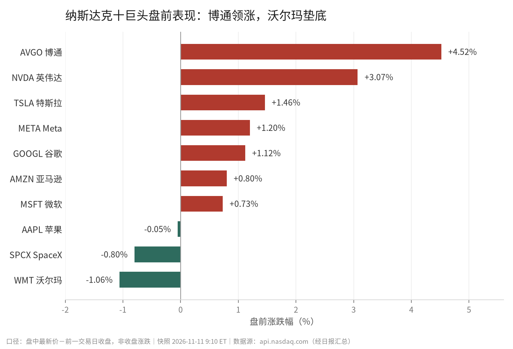
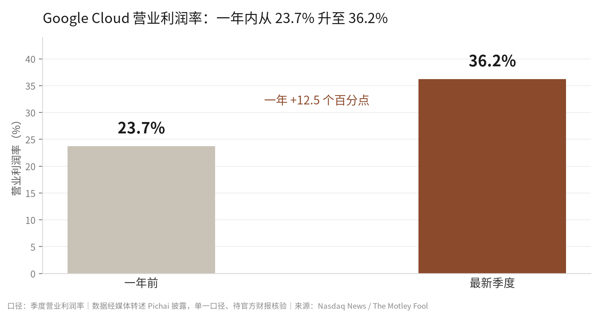

11月11日美股盘前，十家科技巨头里七家翻红。博通涨4.52%领跑，英伟达涨3.07%，沃尔玛跌1.06%垫底。
涨跌幅本身没多少信息量。盘前就是盘前。
真正的动静在11月10日。Alphabet一天之内扔出三条A级消息：新模型上线、第八代TPU扩编、给Anthropic的IPO再加100亿美元。
先把结论放在前面：AI这轮的竞争重心，正从"谁的模型更强"，往"谁能同时握住模型、算力、和客户的股权"挪。
下面是事实，再下面是判断。我尽量分开写。
01
一天三张牌
第一张是模型。
Google正式上线Gemini 4 Carbon，官方定位是"下一代前沿模型"。重点不在通用对话，在编程、长程智能体任务和网络安全。
几个能查到的硬数字：
· 上下文窗口 100万token（输入+输出合计）
· 找漏洞 SEC-bench Pro 88.2%，利用漏洞 ExploitGym 54.8%，修漏洞 CWE-bench 71.0%
· Artificial Analysis Intelligence Index v5.0 拿 59分，居首
· API 每百万输入 2美元、输出 10美元，与上一代 Argon 持平
定价这条别跳过。能力往前走了，价格没动。这是抢开发者的标准动作，也是在给竞争对手定锚。
第二张是芯片。
Google把第八代TPU扩了两款：TPU 8tx 和 TPU 8i Max。8tx 做的是硬件级机密计算，面向政府和受监管行业；8i Max 拿两块 8i 封进同一块基板，算力、SRAM、HBM带宽全部翻倍，同机柜面积能塞两倍芯片。
官方口径是"今年晚些时候"开放，价格和商用渠道都还没披露。
模型和芯片同日发布，不是巧合。这是全栈。
第三张是资本，也是今天最容易被读轻的一条。
Anthropic招股书草案显示：拟发行 8.25亿股，价格区间 每股70至78美元。按这个区间算，IPO募资约 578 亿到 644 亿美元。
七家产业方作为基石，合计认购 260亿美元：谷歌 100 亿、英伟达 100 亿，其余是 AMD、博通、美光、微软和台积电的合作方。谷歌拿的是无投票权 Class N 股，按发行价买。
金额不是重点，名单才是。卖芯片的、做云的、代工的，一起成了这个大客户的股东。
02
盘前这一片红，别读太多

图1｜十家公司全部为盘前快照，非收盘价。数据源：api.nasdaq.com（经日报汇总）
盘前价格里唯一"新"的信号是博通：+4.52%，一骑绝尘。而博通，正好是那七家基石之一。
相关性不等于因果。但在这种消息密度下，市场先给产业链上游定价，是合理的反应。
| 公司 | 最新价 | 前收 | 盘前涨跌 |
| 博通 AVGO | 347.00 | 331.98 | +4.52% |
| 英伟达 NVDA | 174.08 | 168.89 | +3.07% |
| 特斯拉 TSLA | 385.33 | 379.78 | +1.46% |
| Meta META | 649.06 | 641.39 | +1.20% |
| 谷歌 GOOGL | 290.60 | 287.38 | +1.12% |
| 亚马逊 AMZN | 273.03 | 270.87 | +0.80% |
| 微软 MSFT | 537.03 | 533.16 | +0.73% |
| 苹果 AAPL | 348.32 | 348.51 | -0.05% |
| SpaceX SPCX | 141.95 | 143.09 | -0.80% |
| 沃尔玛 WMT | 124.22 | 125.55 | -1.06% |
口径：快照时间 2026-11-11 9:10 ET（北京时间 22:10）。涨跌幅＝盘中最新价－前一交易日收盘，不是收盘涨跌。数据源：api.nasdaq.com。
03
钱在换位置
三条消息指向同一件事：AI产业链的利润分配，正在换位置。
过去两年，价值堆在卖算力的那一端——GPU、HBM、代工。谁有产能，谁定价。
现在买方开始用股权锁供给，卖方开始用股权锁客户。260亿美元的基石认购，本质是一份长期采购协议的金融版本：钱先给，货后到，关系绑死。
判断：接下来决定AI公司估值的，不只是订单增速，还有"它的客户里，有多少同时是它的股东"。
这个判断成立的前提是三条：基石认购确实附带云或算力的长期承诺，不只是财务投资；Anthropic的上市窗口不被监管或市场环境打断；英伟达的供给不断档。
任何一条不成立，上面的推演都要打折。尤其是第一条——公开文件目前只写了认购，没写对价结构。这是整条逻辑最薄的地方。
另一条线在企业侧。IBM和微软11月10日发布Imagine Enterprise，把IBM Consulting的6000多个智能体和Azure AI Foundry、Copilot Studio装进同一个平台，卖给受监管行业。
企业AI的战场，从"选哪个模型"，变成了"怎么管这些智能体"。
04
英伟达的裂缝不在产品上
同一天，英伟达的故事跟芯片没关系。
11月8日，董事会发声明，就"CEO黄仁勋成为外国情报行动目标"的相关报道启动独立调查，由独立董事组成委员会、另聘外部律师。声明同时强调，目前没有理由相信国家安全或公司机密受损。
11月10日，媒体报调查牵头人确定为纽约南区前代理联邦检察官 Joon H. Kim。
股价先动了：11月10日收跌5.5%，媒体称两个交易日蒸发掉约一个甲骨文的市值。11日盘前又反弹3.07%。
一家公司的估值里，
装进了一个人的风险溢价。
基本面这边没有坏消息。11月17日盘后发第三财季（FY2027 Q3）财报，公司此前指引营收1080亿美元±2%、GAAP毛利率74%±50个基点；标普口径的市场一致预期是1090.1亿美元，同比增91.2%。
需求没被证伪。被重新定价的是"人"。
这也是为什么下周二那份财报的电话会，比数字本身更重要——市场想听的不是营收，是董事会调查的边界在哪。
05
跟进项核查
把上一份清单逐条查了一遍。有进展的写进展，查不到的就写查不到。
有进展Gemini 4 Carbon 的官方规格与定价
官方博客与模型卡已发布：100万token上下文、支持文本/图像/音频/视频输入；API定价每百万输入2美元、输出10美元。｜来源：blog.google / Gemini 4 Carbon 上线公告
有进展TPU 8tx 与 8i Max 的规格和商用时间
官方博客确认定位：8tx 做硬件级机密计算，8i Max 面向超长上下文；8i Max 算力、SRAM、HBM带宽均为 8i 的两倍。商用时间只说"今年晚些时候"，定价与可用渠道仍未披露。｜来源：blog.google / 新TPU发布
有进展Anthropic IPO 定价与谷歌的认购条款
招股书草案披露：发行8.25亿股、每股70至78美元；七家基石合计认购260亿美元，谷歌与英伟达各100亿。SEC原文尚未取得，属媒体转述文件。待原文核验。｜来源：新浪财经
有进展英伟达董事会独立调查
11月8日官方声明已发布，委员会由独立董事组成并聘外部律师；11月10日媒体报道牵头人为 Joon H. Kim。调查没有结论，公司称暂无证据显示机密受损。｜来源：NVIDIA投资者关系
有进展IBM 与微软的 Imagine Enterprise
双方11月10日联合发布官方新闻稿：平台用于构建、运行和治理行业级AI智能体，IBM Consulting带入6000多个智能体资产，微软提供 Azure AI Foundry、Copilot Studio、Fabric。｜来源：IBM Newsroom
有进展亚马逊 Prime Air 英国 SAIL 4 授权
亚马逊官方确认：Prime Air 成为全球首个拿到英国民航局 SAIL 4 运营授权与适航验证的运营商，达灵顿可服务家庭从约600户扩到约8000户。｜来源：About Amazon UK
无进展11月17日财报的内容与管理层表态
时点未到。只有日程确认：公司10月28日公告，11月17日盘后（美东14:00 PT / 17:00 ET）开电话会，讨论截至10月25日的FY2027第三财季。｜来源：NVIDIA投资者关系
未能证实Google Cloud 单季营收破300亿、利润率36.2%
目前只有媒体转述 Pichai 披露的单一口径，未见 Alphabet 财报原文或 10-Q 对应科目。未找到官方文件，按未能证实处理，本文不作为确认事实使用。｜来源：Nasdaq News / The Motley Fool

图2｜未获官方财报确认，仅作待核验信息呈现
06
这一天的分量
如果只看盘前，11月11日是个普通的上涨日。
但把11月10日的三件事放在一起看，Alphabet 展示的是一种不太常见的能力：同一天，在模型层、芯片层和资本层各打一张牌，而且三张牌互相供给。
模型要算力，TPU 给。算力要客户，Anthropic 是。客户要钱，股东来出。
这个闭环很漂亮，也很贵，而且它的对手盘同样在闭环——英伟达投的也是那100亿。
对普通读者，这一天的实用价值不是买什么，而是看清一件事：AI 的竞争已经不只是技术竞赛，它同时是一场资产负债表上的结盟。
下一个验证点在11月17日盘后。届时看两件事：营收是否落在指引上沿，以及管理层怎么回答调查的问题。
数据来源：Nasdaq 官方筛选器、api.nasdaq.com 行情快照、Nasdaq News / RTTNews / The Motley Fool、SEC EDGAR、Google 官方博客、NVIDIA 投资者关系、IBM Newsroom、About Amazon UK、新浪财经。报告日期：2026-11-11（美东交易日），数据截止北京时间 2026-11-11 22:10。
本文为公开信息整理与个人分析，所涉价格均为盘前快照，不构成任何投资建议。市场有风险，决策请独立判断。